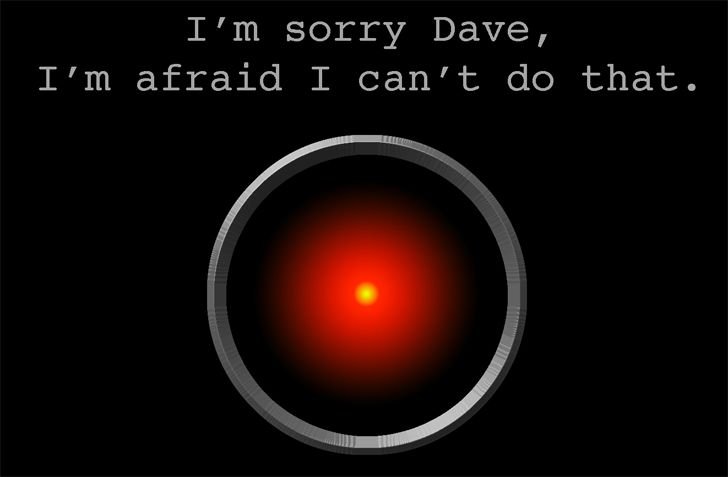
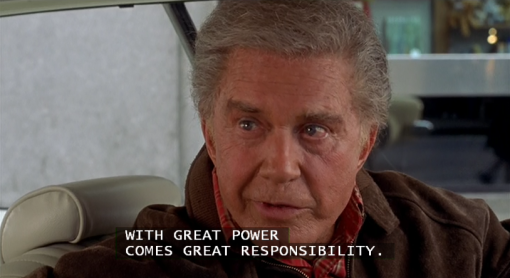
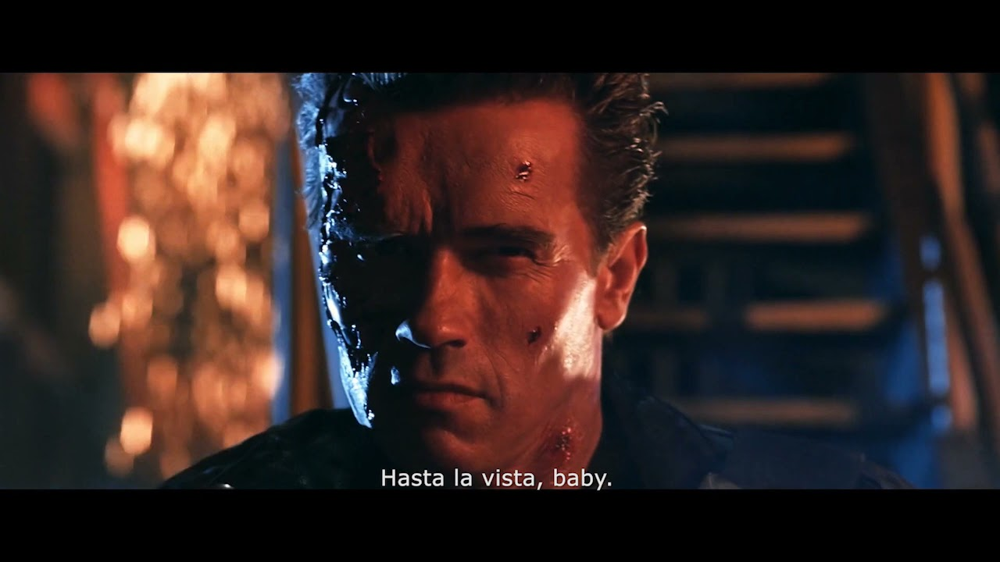

Coffe Tech - Come demolire un monolite (anzi due)
Coffee Tech del 19/02/2025
Alessandro Accardo
Chi sono
Ciao, sono Alessandro Accardo, forse vi ricorderete di me per altri Learning Friday come Introduzione a Docker, Introduzione a Kubernetes o Kubernetes e come toccare le nuvole per meri mortali.
Ecco chi sono.
- Senior Developer
- Solution Architect
- Specializzato in soluzioni Cloud-Native
- Nerd
- Appassionato di tecnologia
- Hacker
Oggi vi racconto come sto affrontando, e continuo a farlo, la sfida di migrare un vecchio sistema monolitico in un'architettura a microservizi e microfrontend. E sì, parlo di un "merdone" – un sistema legacy che, per oltre 15 anni, è stato mantenuto e aggiornato da innumerevoli sviluppatori, fino a trasformarsi in un groviglio di spaghetti code che farebbe arrossire anche il programmatore più esperto.
Scenario Attuale: Il Punto di Partenza
Immaginate un'applicazione sviluppata in Java 8, basata su Apache Struts2 e Spring, costruita in un'epoca in cui modularità e best practice erano quasi un optional. Io mi sono trovato davanti a questo sistema, un "merdone" che ha accumulato anni di manutenzioni, patch improvvisate e soluzioni ad hoc, fino a diventare un labirinto di accoppiamenti stretti e logiche confuse. Il sistema, seppur funzionante, mostra ogni giorno le sue debolezze: difficoltà nella manutenzione, limitata scalabilità e, diciamolo, performance che lasciano molto a desiderare.
Figure 1: Il vecchio monolite legacy è una trappola di spaghetti code - 'It's a trap!' - Da Return of the Jedi (1983).
Il desiderio del cliente – e, in fondo, anche mio – è chiaro: abbandonare il vecchio paradigma e abbracciare una nuova architettura che sia modulare, scalabile e, soprattutto, mantenibile nel tempo. E il piano d'azione che sto seguendo è audace: migrare verso microservizi sviluppati in Spring Boot e Spring Cloud, abbinati a una rivoluzionaria implementazione di microfrontend, il tutto supportato da una infrastruttura CI/CD e orchestrata su Kubernetes. Ah, e per non farci mancare un colpo epocale, stiamo migrando da Java 8 a Java 21 – e con l'orizzonte già puntato su Java 24!
Il Problema Tecnico: Tra Legacy e Innovazione
Analizzare questo "merdone" significa affrontare una realtà fatta di codice scritto "un po' male", dove ogni modifica è un rischio e ogni aggiornamento potrebbe trasformarsi in una partita a Jenga. Il sistema si basa su un'architettura a layer che, nel tempo, ha favorito un accoppiamento troppo stretto tra le componenti, rendendo il refactoring un'impresa titanica.

Figure 2: Quando il legacy code resiste ai cambiamenti… 'I'm sorry, Dave. I'm afraid I can't do that.' - Da 2001: A Space Odyssey (1968).
Per poter avanzare, ho deciso di mettere in campo alcuni principi fondamentali tratti dal Domain Driven Design (DDD). Come ricorda Eric Evans, "il cuore di ogni applicazione è il dominio", e ho iniziato a ridefinire l'architettura concentrandomi sulla suddivisione in domini ben delimitati. Questo mi ha permesso di individuare i bounded context e, da lì, di progettare una migrazione graduale che abbracci il pattern Strangler Fig.
Il pattern Strangler Fig, che adoro definire quasi come il "supereroe" della migrazione, mi consente di isolare le funzionalità del vecchio sistema e riscriverle come microservizi indipendenti, riducendo così gradualmente il carico del monolite. È come costruire un ponte – un pezzo alla volta – che porta dal caos del legacy verso l'ordine di un'architettura moderna e modulare.
Qualità del Codice: Il Quality Gate come Bussola
Una trasformazione così radicale non può prescindere da un cambiamento profondo anche nella qualità del codice. Io credo fermamente che il codice debba essere un riflesso fedele dei processi aziendali, e per questo ho imposto standard rigorosi sin dall'inizio.

Figure 3: In un sistema dove ogni riga conta, ricordarsi che 'With great power comes great responsibility.' - Da Spider-Man (2002).
Nel nuovo percorso, ogni commit viene valutato da un sistema di Quality Gate che integra linting, formatting, static analysis e, soprattutto, test automation. Anche se, scherzosamente, dubitavo che il vecchio sistema avesse mai visto una suite di test decente, ora ogni nuova funzionalità viene sviluppata con un occhio attento alla qualità e alla manutenibilità. In questo modo, applicando il principio "less moving parts, less broken parts", mi assicuro che ogni componente sia il più possibile isolato e facile da aggiornare.
Strumenti e Infrastruttura: Dalla Manualità all'Automazione Totale
Se prima il deploy era un rituale manuale su macchine virtuali Windows Server, oggi il nostro processo è totalmente automatizzato grazie a un flusso CI/CD che gestisce build, test, analisi statica, containerizzazione e deploy su un cluster Kubernetes – tutto gestito in-house, per mantenere il pieno controllo sull'infrastruttura, senza dipendere da cloud provider esterni.
Questa automazione non solo riduce gli errori umani, ma accelera lo sviluppo e garantisce un ciclo di rilascio continuo, in perfetta sinergia con la filosofia dei microservizi.

Figure 4: Addio ai vecchi processi manuali: 'Hasta la vista, baby.' - Da Terminator 2: Judgment Day (1991).
La Rivoluzione della Sicurezza: Da Custom a SSO
Una delle trasformazioni più significative riguarda la sicurezza. Nel vecchio sistema, l'autenticazione era gestita in maniera custom, con user, password e persino un terzo fattore direttamente sulla webapp – una soluzione che, oltre ad essere poco scalabile, lasciava spazio a numerose vulnerabilità.
Figure 5: Implementando il nuovo SSO, proteggiamo il sistema come Gandalf: 'You shall not pass!' - Da The Lord of the Rings: The Fellowship of the Ring (2001).
Ho deciso di introdurre un sistema di Single Sign-On basato su OAuth 2.1, che ha rivoluzionato completamente la gestione della sicurezza. Oggi, l'autenticazione è centralizzata e il sistema di autorizzazioni è stato ripensato per offrire una granularità mai vista: partiamo dalla profilazione degli utenti fino ad arrivare a definire i permessi di invocazione per singoli metodi. Questa trasformazione non solo aumenta la sicurezza, ma rende anche il sistema molto più flessibile e adattabile alle esigenze future.
Microfrontend: La Rivoluzione Anche sul Frontend
Parlando di innovazione, non posso non soffermarmi sul fronte del client. La nuova architettura, headless per natura, apre la porta a un approccio a microfrontend che ho deciso di adottare con entusiasmo.
Figure 6: Non si integra un frontend monolitico senza una strategia modulare: 'One does not simply walk into Mordor.' - Da The Lord of the Rings: The Fellowship of the Ring (2001).
Mentre in altri progetti si è optato per frontend monolitici – con conseguenti problemi di build e integrazione dovuti all'interazione di decine di sviluppatori su un unico codice – io ho scelto di dividere il frontend in microfrontend. Questa scelta mi consente di avere progetti più piccoli, "less moving parts, less broken parts", e garantisce una migliore manutenibilità. Inoltre, grazie all'adozione di librerie di componenti comuni, riesco a ottenere un'UI/UX uniforme e a ridurre il codice duplicato, aumentando così notevolmente la velocità di sviluppo e la qualità del prodotto finale.
Il vantaggio è duplice: non solo i microservizi, ma anche i microfrontend beneficiano di una struttura modulare e di una maggiore flessibilità, permettendo di comporre la pagina finale in modo dinamico e di integrare facilmente nuovi componenti senza rischiare effetti collaterali indesiderati.
Integrazioni esterne, outsourcing e le sfide della comunicazione
Non possiamo dimenticare le sfide legate alle integrazioni con terze parti e, in alcuni casi, l'outsourcing di parti del lavoro. Il nuovo sistema deve essere in grado di dialogare con applicazioni esterne in maniera robusta e resiliente. Questo significa definire contratti API chiari e prevedere meccanismi di fallback, per non far crollare l'intero ecosistema nel caso in cui un partner esterno vada in tilt. La comunicazione, sia sincrona che asincrona, diventa dunque una questione di design, dove la scelta del protocollo e del pattern (RPC, REST, Eventi) deve essere fatta con la dovuta attenzione alle esigenze specifiche del dominio.
Transazioni distribuite e multi-tenancy: gestire il caos con stile
Uno dei nodi più critici in un'architettura a microservizi è la gestione delle transazioni distribuite. Qui la scelta tra orchestrazione e coreografia non è solo tecnica, ma strategica. Un coordinatore centrale può garantire una sequenza di operazioni coerente, ma a scapito della flessibilità; mentre la coreografia, che permette a ciascun servizio di reagire agli eventi in maniera indipendente, richiede una maggiore attenzione alla consistenza dei dati.
A complicare ulteriormente il quadro c'è il requisito di multi-tenancy e multi-level tenancy. Sistemi che devono servire clienti diversi (o livelli differenti all'interno della stessa organizzazione) impongono una separazione dei dati e delle logiche di business che, ancora una volta, trovano risposta nei principi del Domain Driven Design. Come dice un vecchio adagio tra architetti software, "Se non separi i domini, ti ritrovi a litigare con i dati come in una famiglia numerosa: ognuno tira per la sua parte".
Observability e il coraggio di abbracciare il caos
Monitorare un sistema distribuito è come cercare di tenere sotto controllo il tempo in mezzo a una tempesta: bisogna avere gli strumenti giusti per non perdersi in mezzo al caos. Logging, monitoring, tracing e dashboard in tempo reale diventano fondamentali per avere visibilità sull'intero ecosistema. E sì, abbracciare il caos è quasi una filosofia: come in un giro del mondo in solitaria, dove il controllo totale è un'illusione, la resilienza e la capacità di reagire rapidamente agli imprevisti diventano le vere chiavi del successo.
L'Analisi in Corso: Un Percorso in Evoluzione
Devo sottolineare che il percorso non è ancora finito. Ogni giorno mi trovo a confrontarmi con nuove sfide, nuove intuizioni e, sì, anche qualche imprevisto – perché lavorare con un sistema così complesso significa abbracciare il caos con un sorriso ironico sulle labbra.
Quello che sto facendo è un continuo processo di analisi, deduzioni e affinamenti, che coinvolge non solo la parte tecnica, ma anche la collaborazione con un team di sviluppo che sta implementando le soluzioni progettate insieme a me. La migrazione è un percorso in evoluzione, un cammino lungo e stimolante, dove ogni iterazione mi dà l'opportunità di migliorare ulteriormente il sistema e di dimostrare che, anche partendo da un "merdone" fatto di spaghetti code, è possibile costruire un'architettura moderna, scalabile e sicura.
Il futuro è un evento
In chiusura, non possiamo non guardare al futuro, fatto di architetture basate su eventi (EDA). L'adozione di un Event Driven Architecture non solo favorisce la scalabilità, ma rende il sistema intrinsecamente reattivo, capace di adattarsi in tempo reale ai cambiamenti. Anche in sistemi che, per ora, non sono nativamente EDA, l'introduzione di componenti di messaggistica può rappresentare il primo passo verso una trasformazione ancora più radicale.
Conclusioni
In sostanza, demolire un monolite – e in questo caso, non uno ma due – significa intraprendere un viaggio che va ben oltre il semplice refactoring. Significa abbracciare una visione in cui il codice non è più una massa informe di righe incastrate insieme, ma il riflesso fedele di domini ben definiti, dove ogni microservizio rappresenta una piccola, autonoma, e robusta parte di un sistema complesso.
Il percorso richiede coraggio, precisione tecnica e, soprattutto, una buona dose di ironia. Perché, diciamocelo, se non si ride un po' davanti al caos degli spaghetti code, cosa rimane? Seguendo i principi del Domain Driven Design, applicando con maestria il pattern Strangler Fig e dotandosi degli strumenti e delle infrastrutture più moderni, il vecchio merdone può essere trasformato in un sistema scalabile, manutenibile e, sì, anche un po' più bello da vedere.
In fin dei conti, demolire per ricostruire non è solo una questione tecnica: è un atto di rinascita, dove ogni bug, ogni accoppiamento forzato, ogni riga di codice maledettamente "vintage" diventa il trampolino di lancio verso un futuro innovativo. E se dopo tutto questo viaggio vi ritrovate a sorridere (o a ridere amaramente) pensando al vecchio sistema, sappiate che ogni ruga del tempo è il segno di un'evoluzione inevitabile e, in fondo, affascinante.
Non posso proclamare una vittoria definitiva – il lavoro continua, e ogni giorno sono impegnato a far evolvere il sistema secondo i principi del Domain Driven Design e del pattern Strangler Fig. La mia esperienza finora mi insegna che demolire il passato per abbracciare il futuro richiede coraggio, attenzione ai dettagli e, ovviamente, un buon senso dell'umorismo.
Se state affrontando una sfida simile, vi invito a considerare non solo la parte tecnica, ma anche l'importanza di definire domini chiari, di adottare standard di qualità rigorosi e di sfruttare ogni strumento a disposizione per automatizzare e rendere resiliente l'intero ecosistema. Io sono ancora in corsa, ma posso dirvi con sicurezza che, passo dopo passo, stiamo trasformando quel vecchio "merdone" in una piattaforma che guarda al futuro – con microservizi, microfrontend e una sicurezza all'avanguardia.
Spero che questo resoconto, intriso di tecnicismo, ironia e qualche citazione dai classici, vi abbia regalato spunti interessanti e qualche sorriso durante la lettura. Spero inoltre, che con questo post io vi abbia fornito un po' di motivazione, fondamentale per affrontare le sfide della modernizzazione del vostro software. Buona demolizione – e, soprattutto, buona rinascita del vostro software!
Figure 7: Il viaggio è ancora lungo, ma ricordate: 'Don't Panic.' - Da The Hitchhiker's Guide to the Galaxy (1981).
Saluti
Grazie a tutti per essere arrivati fin qui!